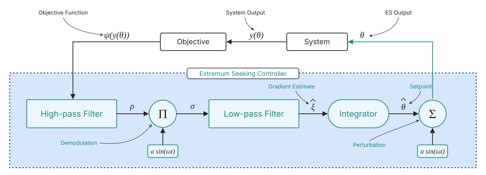
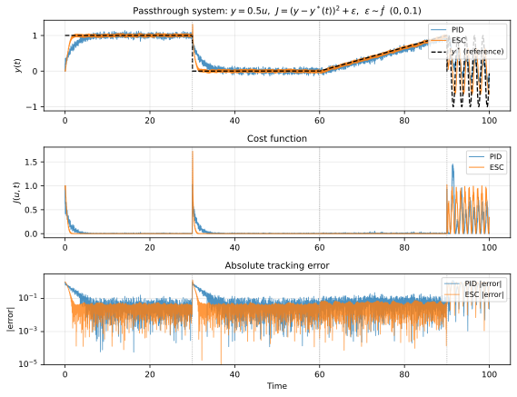
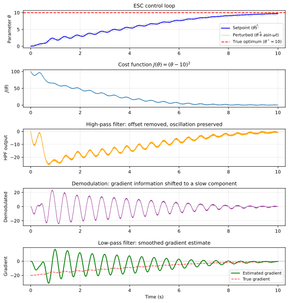

Method: Extremum Seeking Control
How does performance feedback update the diversity target?
01
What is Extremum Seeking Control?
Extremum Seeking Control (ESC) is a model-free optimization method that drives a parameter toward the extremum of an unknown objective. It applies a small sinusoidal perturbation to the parameter, measures the resulting change in the objective, and extracts a gradient estimate through demodulation. Integrating this estimate moves the parameter toward the optimum without requiring a model of the objective function.

02
Why use ESC to select diversity?
The relationship between behavioral diversity and team performance has no analytical model and differs across tasks. ESC requires only a measurable performance signal, making it suited to this setting. It also remains effective when the signal is noisy, as is the case for episodic return in multi-agent reinforcement learning, where stochastic environment dynamics cause the measured return to fluctuate between evaluations.

03
How does ESC estimate the gradient?
The measured objective first passes through a high-pass filter, which removes its slowly varying offset and isolates the response to the perturbation. Demodulation multiplies this response by the perturbation signal, producing a term whose average is proportional to the local gradient. A low-pass filter then removes the remaining high-frequency components, and an integrator converts the smoothed gradient estimate into a parameter update. The sign of the integrator gain determines whether ESC maximizes or minimizes the objective.

04
How is ESC applied in ADiCo?
In ADiCo, the parameter is the diversity target and the objective is the mean episode reward from policy evaluation. After each training cycle, the evaluation return drives one ESC update, and the integrator gain is positive so that ESC maximizes team performance. The updated nominal target, plus the next perturbation, is held fixed throughout the following training cycle while DiCo regulates diversity toward it.
Two properties of this design require care. The perturbation produces persistent oscillations in diversity and performance, so its amplitude trades gradient accuracy against steady-state variation. The gradient estimate also scales with reward magnitude, so the integrator gain must be matched to the reward range of each task.